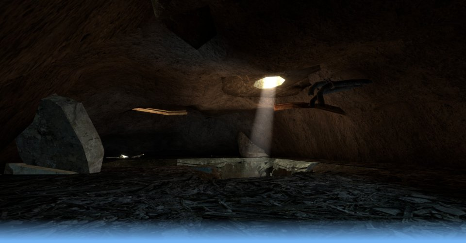

Level Design



Industrial 17
for Half-life 2: Deathmatch
A fast-paced, intense deathmatch map, within an abandoned warehouse threatened by the encroaching walls of the "Combine Citadel".
The first map I created a few years ago, but have recently decided to polish and release. With plenty of interlinking corridors, open halls and vantage points for picking off your foes, dm_industrial17 may not be the most attractive level ever, but it's great for action-packed fun even with just 3 or 4 players.
Released: May2011
Click Here to Download!
.zip File: 1.28 MB. This map requires a legal copy of Steam and Half-life 2:Deathmatch to play.Readme file included with installation instructions.
Screenshots: Click to view full-size